12 çağKulübeden yıldız kalesine.
Her çağ on seviye sürer ve bir boss ile biter. Kulen üç aşamada büyür, tepsine dört yeni savunma gelir, düşmanlar yeni bir numara öğrenir. Arayüz hep aynı kalır; değişen yalnızca çağın rengi.
Çağ 1 · Sv. 1–10
Taş Devri
Kulübe → Gözcü Evi → Klan Kalesi
KuralDört yol, sekiz dalga. Düşmanlar tek tip gelir, boss yavaştır.
Savunmalar
- Sapan
- Mızrak Atıcı
- Ateş Çukuru
- Kaya Yuvarlayıcı
Tunç Çağı
Tunç Ocağı → Tunç Burcu → Metal Kale
KuralKalkanlı düşman önden hasar almaz. Onu yandan ya da arkadan vur.
Savunmalar
- Tunç Okçu
- Kalkan Duvarı
- Savaş Arabası
- Tunç Kazan
Antik Çağ
Sütunlu Tapınak → Meclis Kulesi → Mermer Saray
KuralÜçerli zırhlı sıralar: zırh her vuruştan 5 can yutar. Ağır vuruş ve alan hasarı değerli.
Savunmalar
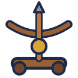
Balista- Kalkan Dizisi
- Ateş Boruları
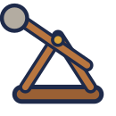
Mancınık
Orta Çağ
Taş Gözcü → Burç → Kraliyet Kalesi
KuralUçan düşman yolları atlar. Onu yalnız bazı savunmalar vurabilir.
Savunmalar
- Tatar Yayı
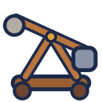
Ağır Mancınık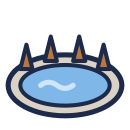
Hendek- Okçu Kulesi
Barut Çağı
Toplu Tabya → Kale Burcu → Yıldız Kale
KuralBazı düşmanlar savunmana uzaktan ateş eder. Savunmanın canına dikkat et.
Savunmalar
- Top
- Fişek Atıcı
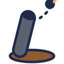
Havan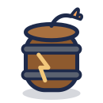
Barut Fıçısı
Buhar Çağı
Kazan Kulesi → Dişli Kule → Saat Kulesi
KuralAğır birim tuzaktan etkilenmez. Yalnız yavaşlatan savunmaya güvenme.
Savunmalar
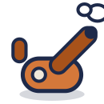
Buhar Topu- Dişli Tuzak
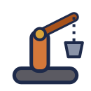
Vinç Kolu- Buhar Düdüğü
Elektrik Çağı
Dinamo Kulübesi → Bobin Kulesi → Şimşek Santrali
KuralGece savunmalar zayıf vurur, ampul ışığındakiler tam vurur. Bazı düşmanlar mermiyi saptırır.
Savunmalar
- Şimşek Bobini
- Ampul Tuzağı
- Elektrik Çiti
- Radyo Direği
Atom Çağı
Kubbe Evi → Reaktör Kubbesi → Füze Üssü
KuralUçan Daire mermiden kaçar. Radar menzilindeyken vurulur.
Savunmalar
- Parçacık Topu
- Radar Çanağı
- Füze Rampası
- Cam Kubbe
Dijital Çağ
Sunucu Kulesi → Veri Kalesi → Ağ Çekirdeği
KuralIşınlanan düşman yolda ileri sıçrar. Kulenin yanını boş bırakma.
Savunmalar
- Lazer
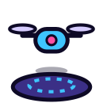
Drone Yuvası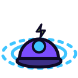
EMP- Kalkan
Robot Çağı
Montaj Kulübesi → Mekanik Kale → Mega Mekanik
KuralYollar bant gibi akar, düşmanlar hızlanır.
Savunmalar
- Robot Kol
- Mekanik Örümcek
- Manyetik Alan
- Tamir Botu
Uzay Çağı
Fırlatma Rampası → Ay Üssü → Yörünge İstasyonu
KuralMeteor yolu izlemez, kuleye dümdüz iner. Kulenin çevresini koru.
Savunmalar
- Roket Rampası
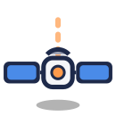
Uydu Lazeri- Çekim Alanı
- Astronot Nöbetçi
Kozmik Çağ
Yıldız Çekirdeği → Nebula Kulesi → Kozmik Kapı
KuralBazı düşmanlar ölünce ikiye bölünür, bazıları görünmezdir. Işık Kalkanı görünmezi açığa çıkarır.
Savunmalar
- Yıldız Topu
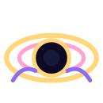
Mini Kara Delik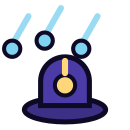
Kuyruklu Yıldız Yağmuru- Işık Kalkanı